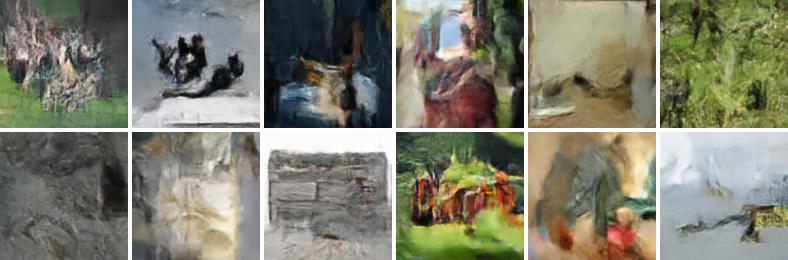
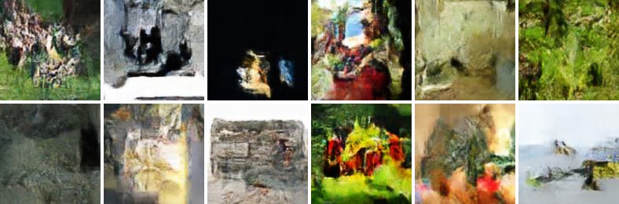
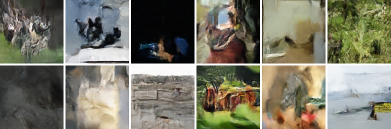
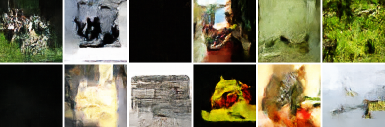

Self-Teaching Helps FID Only on Top of Self-Flow,
and Pushes Samples to Black and White
Abstract
We test self-teaching, an auxiliary loss that matches the features of the model's output crop to those of the clean crop under a frozen copy of the model (judge at block 3 or 6). We run two paired scaling sweeps from 0.9M to 49M parameters, 100k steps each. Without self-flow (series A), self-teaching raises EMA FID at every scale. The loss grows from 2–8% at 0.9–10M to 10–16% at 49M. With self-flow in every run (series B), self-teaching lowers FID by 3–8% at 0.9–10M. The gain shrinks to 0.3–2% at 20–49M (one seed). In both series, self-teaching raises sample contrast by a near-constant offset of +0.05 to +0.08 in pixel std, whatever the contrast of its baseline. In series A this offset corrects washed-out samples toward real images. In series B it overshoots: 10–18% of pixels go fully black, against 3% in real images. FID does not penalize this. We conclude that self-teaching is not worth its 1.3–1.7× step cost at scale in its current form, and that FID must be read together with a tone statistic.
1 Setup
Model and training. Pixel-pyramid diffusion transformer with 8 blocks, widths 72 to 576 (0.90M, 1.91M, 5.07M, 9.73M, 19.5M, 49.3M trainable parameters). Clamped loss weight, EMA 0.999, 100k steps. Every number on this page uses the EMA weights at the final step (100k), never the best checkpoint.
Arms. base: no self-teaching. st3 / st6: self-teaching with the judge cut at block 3 / block 6. The judge is a frozen copy of the live weights, synced every step, run at t = 1. The loss is the RMS-normalized MSE between judge features of the clean crop (detached) and of the output crop, with the gradient flowing through the judge into the output. Series A has no other auxiliary loss. Series B adds self-flow (block 3 taught toward block 6 of the EMA teacher, 25% noisier patches, weight 1) to every arm, so its base is "self-flow only".
Pairing. Within a series and seed, all three arms draw identical data, noise, t, crops, RoPE scales and self-flow masks. A run aborts if its input fingerprints differ from its baseline. Gains are computed per seed, then averaged.
Metrics. FID on 10,000 samples (16 Euler steps) against ImageNet validation images. Tone is measured on the 12 fixed-seed preview samples of each run (the same seeds in every run): pixel std, and the share of pixel values below 0.02 ("black") and above 0.98 ("white"). The real-image reference comes from 2,400 validation images resized as in training: std 0.270, black 3.1%, white 2.7%. Sets of 12 real images span std 0.24–0.30 and black 0.4–8.5% (5th–95th percentile).
2 Results
2.1 FID: the sign of the effect depends on self-flow
In series A, self-teaching loses at every scale (Table 1). The judge at block 6 loses more than the judge at block 3, and both losses grow from 10M upward. In series B, the same loss helps at every scale. The gain is 2.6–7.6% up to 10M and falls to 0.3–1.9% at 20M and 49M. The cells of series B at 10M and above have one seed so far. In series A the seed std of FID is up to 8.7 at 0.9M and up to 1.3 at 10–20M. The B gains at 20–49M (0.4–2.5 FID) are therefore comparable to seed noise.
Self-flow alone (B base against A base) hurts at 0.9M and 1.9M (+5.1%, +2.3% FID) and helps from 10M (−4.5%, −5.8%, −5.0%). The best run of both sweeps is B st3 at 49M: FID 114.2, 6.5% below the plain baseline (122.1) and 1.6% below self-flow alone.
2.2 Tone: self-teaching adds a fixed amount of contrast
Series A baselines are washed out: pixel std 0.216–0.224 and almost no black pixels (≤ 0.12%). Self-flow raises the baseline close to real images (std 0.249–0.256, black 2.3–5.1%). Self-teaching then adds about the same amount of contrast in both series (Table 2): +0.05 to +0.07 in A and +0.06 to +0.08 in B. In A the result lands on real images (std 0.273–0.293). In B it overshoots to 0.311–0.333, with 10–18% black and 3.5–5.3% white pixels, 3–6× and 1.3–2× the real shares. The black share of B st6 is highest at 10M and 20M (14.3%, 17.8%). Figure 2 shows the result: whole samples collapse to near-black, and colors saturate.




st6 are almost entirely black.3 Discussion
The contrast change does not explain the FID change. The same contrast offset comes with a loss in A, where it corrects the samples, and with a gain in B, where it overshoots. Therefore FID responds to something else that self-teaching changes, and it does not penalize the tone error we can see. A run that wins on FID alone can therefore ship visibly clipped samples.
A likely mechanism (hypothesis, not tested). The diffusion loss trains the output toward the posterior mean, which averages plausible images and so has less contrast than any one of them. This matches the washed-out A baselines. A feature-space loss through a judge network rewards outputs whose features look like one clean image. Such losses are known to sharpen outputs and to push them toward extreme values. Because the judge copy is the model itself, nothing in the loss anchors the pixel statistics to the data. This would explain an offset that does not depend on where the baseline starts. It would also explain why the offset is slightly larger, on average, with the deeper judge (block 6) and from 20M up, where the judge's features are stronger.
4 Implications
- Self-teaching is not a standalone method. Without self-flow it costs FID at every scale tested. Report it only as an addition to self-flow.
- Its value fades with scale. On self-flow, the gain falls from 3–8% at ≤ 10M to 0.3–2% at 20–49M, while the step time grows by 1.3–1.4× (
st3) and 1.6–1.7× (st6) at those sizes. At equal compute, the 20–49M baseline would likely train past it. In its current form the method does not pay at scale. - FID needs a tone guard. Pixel std and the black and white shares now appear next to FID in train-viz (run pages and experiment pages), with the real-image values as reference. A treatment that moves black share outside the real range should be flagged even when FID improves.
- If self-teaching is kept, fix the tone first.
st3gives better FID thanst6at 10–49M, with less compute and, at 10M and 20M, less overshoot, so it is the variant to keep.
5 Next steps
- Measure tone on the 10,000 FID samples of the final checkpoints. This replaces the 12-seed estimate (about 1 GPU hour, after the sweep).
- Test the mechanism without training. Feed real crops with contrast scaled by 0.8–1.3 through the judge of a trained checkpoint. If the self-teaching distance is smallest above 1.0, the loss itself rewards excess contrast.
- If the test confirms it, run one paired arm at 20M that matches the per-channel mean and std of the output crop to the clean crop before the judge. This removes the reward for contrast and keeps the feature target. Compare FID and black share against B
st3.
6 Limitations
- Tone is measured on 12 samples per run. The seeds are shared across arms, so arm comparisons are paired, but absolute values carry the wide spread of 12-image sets.
- Series B has one seed at 10M and above, and series A one seed at 49M. Series A stopped before its third seed.
- All runs stop at 100k steps, where FID is still above 110. The ranking at convergence can differ.
- Scaling changes the learner and the judge together, so the sweeps do not separate "a bigger model" from "a stronger judge".
Sources: stscale_report.py), run folders unify-wclamp01-{stscale,sfscale}-<scale>-<arm>-seed<k>-100k-spark. Data snapshot: 2026-10-25 20:15.